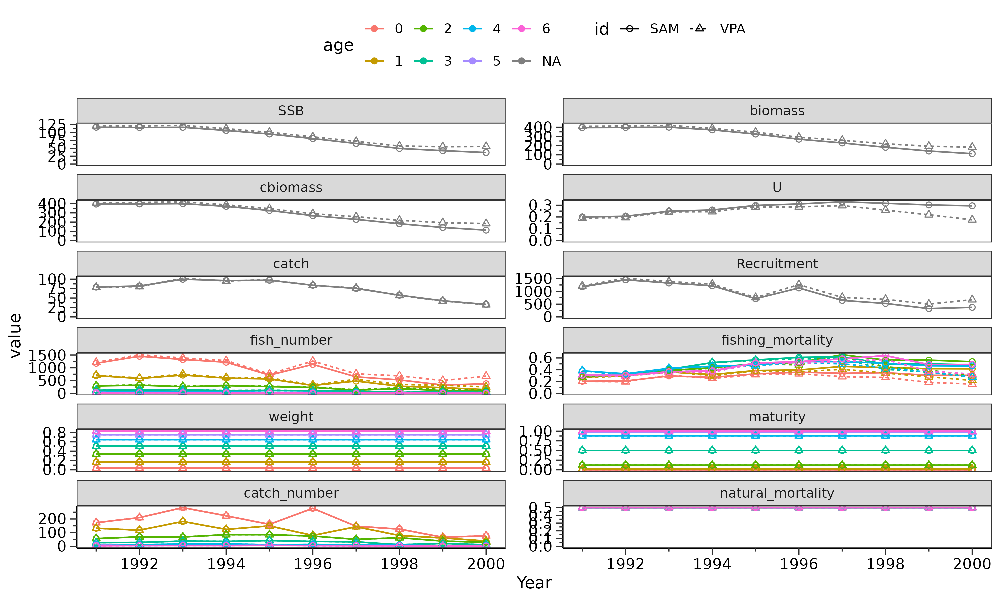
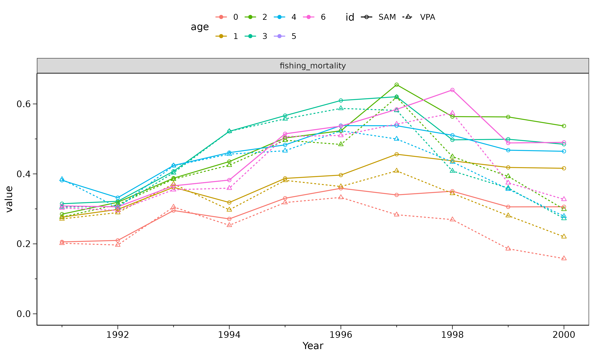
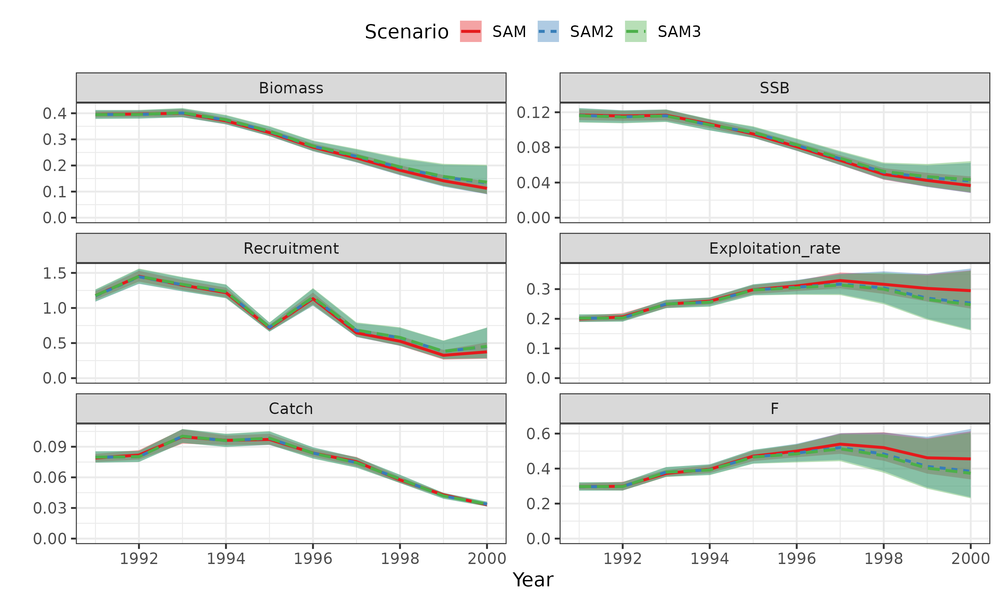
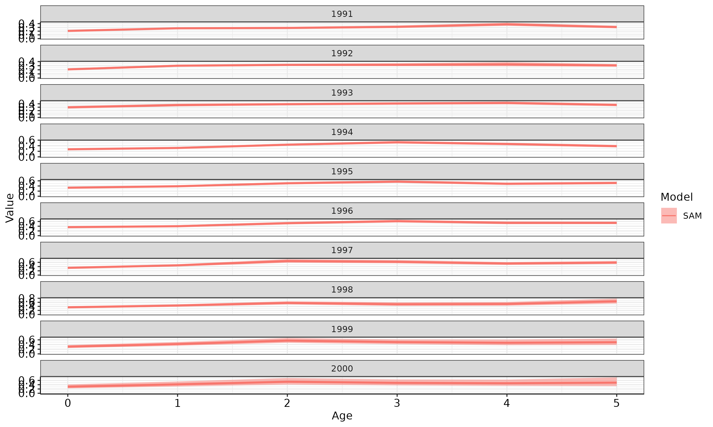
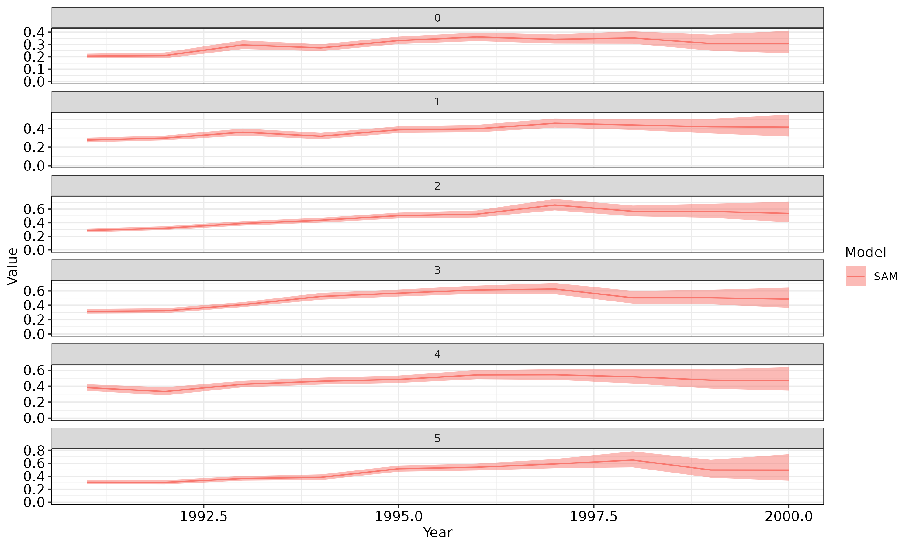

SAMを使った資源量推定
市野川桃子・西嶋翔太
2025-10-19
sam.RmdSAMのインストール
- インストールに必要なパッケージ(devtools)はあらかじめインストールしておいてください
## インストール (最新ブランチはcmsa11→vignetteとかが追加されたcreate_vignette)
#devtools::install_github("ShotaNishijima/frasam@create_vignette") # frasam
## frasyrも使うのでfrasyrもインストールしてください
#devtools::install_github("ichimomo/frasyr@dev")
# ライブラリの呼び出し
library(frasyr)
#> Warning: replacing previous import 'magrittr::set_names' by 'purrr::set_names'
#> when loading 'frasyr'
#> Warning: replacing previous import 'EnvStats::rpareto' by 'rmutil::rpareto'
#> when loading 'frasyr'
#> Warning: replacing previous import 'EnvStats::ppareto' by 'rmutil::ppareto'
#> when loading 'frasyr'
#> Warning: replacing previous import 'EnvStats::qpareto' by 'rmutil::qpareto'
#> when loading 'frasyr'
#> Warning: replacing previous import 'EnvStats::dpareto' by 'rmutil::dpareto'
#> when loading 'frasyr'
#> Warning: replacing previous import 'assertthat::has_name' by 'tibble::has_name'
#> when loading 'frasyr'
#> Warning: replacing previous import 'rmutil::nesting' by 'tidyr::nesting' when
#> loading 'frasyr'
#> Warning: replacing previous import 'magrittr::extract' by 'tidyr::extract' when
#> loading 'frasyr'
library(frasam)
#> Warning: replacing previous import 'magrittr::set_names' by 'purrr::set_names'
#> when loading 'frasam'
#> Warning: replacing previous import 'assertthat::has_name' by 'tibble::has_name'
#> when loading 'frasam'
#> Warning: replacing previous import 'Matrix::unpack' by 'tidyr::unpack' when
#> loading 'frasam'
#> Warning: replacing previous import 'Matrix::expand' by 'tidyr::expand' when
#> loading 'frasam'
#> Warning: replacing previous import 'magrittr::extract' by 'tidyr::extract' when
#> loading 'frasam'
#> Warning: replacing previous import 'Matrix::pack' by 'tidyr::pack' when loading
#> 'frasam'
# devtools::load_all()
library(tidyverse)
#> ── Attaching core tidyverse packages ──────────────────────── tidyverse 2.0.0 ──
#> ✔ dplyr 1.1.4 ✔ readr 2.1.5
#> ✔ forcats 1.0.1 ✔ stringr 1.5.2
#> ✔ ggplot2 4.0.0 ✔ tibble 3.3.0
#> ✔ lubridate 1.9.4 ✔ tidyr 1.3.1
#> ✔ purrr 1.1.0
#> ── Conflicts ────────────────────────────────────────── tidyverse_conflicts() ──
#> ✖ dplyr::filter() masks stats::filter()
#> ✖ dplyr::lag() masks stats::lag()
#> ℹ Use the conflicted package (<http://conflicted.r-lib.org/>) to force all conflicts to become errors
library(patchwork)SAMを適用するデータセットの作成
VPAを適用するときのデータセットと同じ形式のデータセットが利用できます。 ただし、VPAでは資源量指数が利用できなくても適用できますが、SAMでは資源量指数の利用が必須になります。
データの読み込み
caa <- read.csv("https://raw.githubusercontent.com/ichimomo/frasyr/dev/data-raw/ex1_caa.csv", row.names=1)
waa <- read.csv("https://raw.githubusercontent.com/ichimomo/frasyr/dev/data-raw/ex1_waa.csv", row.names=1)
maa <- read.csv("https://raw.githubusercontent.com/ichimomo/frasyr/dev/data-raw/ex1_maa.csv", row.names=1)
index <- read.csv("https://raw.githubusercontent.com/ichimomo/frasyr/dev/data-raw/ex1_index.csv", row.names=1)
# create pseudo data for caa
caa <- caa * exp(rnorm(length(caa), mean=-0.5 * (0.1)^2, sd=0.1))
dat <- data.handler(caa=caa, waa=waa, maa=maa, M=0.5, index=index)
# まずはsamのhelpファイルを閲覧してどんなオプションがあるか把握しましょう
#help(sam)
# SAMを使う準備 (samのオプションtmb.run=TRUEでも良いかもだけど、今はうまく動かないみたい？)
use_sam_tmb(TmbFile="sam2",overwrite=FALSE) #compile and activate
#> using C++ compiler: 'g++ (Ubuntu 13.3.0-6ubuntu2~24.04) 13.3.0'
#> [1] TRUE
# samの実施
# (*)の部分が設定ポイント
res_sam <- sam(dat,
last.catch.zero = FALSE,
cpp.file.name = "sam2",
tmb.run = FALSE, # TRUEにするとtmbをコンパイルしてロードする。最初の１回だけTRUEにするのが良い？sam2だと動かない
rec.age = 0,
plus.group = TRUE,
alpha = 1, # 最高年齢と最高年齢-1歳のFが同じと仮定（VPAと同じ仮定)
est.method = "ml",
# 資源量指数に関わる設定。資源量指数の数だけベクトルで与える。
abund = c("SSB"),
min.age = c(0),
max.age = c(6),
b.est = FALSE, # b推定の有無(*)
b.fix = NA,
# 分散に関わる設定。どの分散を同じとするか。年齢の数だけ与える (*)
varC = c(0,0,0,0,0,0,0), #とりあえずすべての年齢で共通
varN = c(0,1,1,1,1,1,1), #0歳と1歳魚以上で分ける
varF = c(0,0,0,0,0,0,0), #とりあえずすべての年齢で共通
# 1歳魚以上のlog(N)のプロセス誤差を小さい値で固定(分散の値なので、この場合SD=0.01に相当)
varN.fix = c(NA, 1e-4),
# 再生産関係推定に関わる設定 (*)
SR = "BH",
AR = 0,
# Fの多変量Random walkの非対角成分の相関係数のタイプ。１ならすべての年齢間で相関係数1, 0なら完全にランダム, 2は任意の年齢間で共通のrhoを推定、3は年齢i,jの相関を\eqn{\rho^|i-j|}で推定 (*)
rho.mode = 0,
# 初期値の設定
q.init = NULL,
sdFsta.init = NULL,
sdLogN.init = c(0.2, 0.2),
sdLogObs.init = NULL,
rho.init = NULL,
a.init = NULL,
b.init = NULL,
# その他
# ref.year = 1:5, # 重要そうだけど使われていない
bias.correct = TRUE,
bias.correct.sd = FALSE,
get.random.vcov = FALSE,
silent = TRUE,
remove.Fprocess.year = NULL,
RW.Forder = 0,
map = NULL, # map (パラメータの推定の有無を個別に調整する) を入れる
map.add = NULL, # mapを追加する
p0.list = NULL,
scale = 1000,
scale_number = 1000,
gamma = 10,
sel.def = "max",
use.index = NULL,
upper = NULL,
lower = NULL,
index.key = NULL,
index.b.key = NULL,
lambda = 0,
add_random = NULL,
tmbdata = NULL,
sep_omicron = TRUE,
catch_prop = NULL,
no_est = FALSE,
getJointPrecision = FALSE,
loopnum = 2
)
## 推定結果の確認: opt=推定パラメータや目的関数、収束の有無
## - $convergenceが0なら収束
res_sam$opt
#> $par
#> logQ logSdLogFsta logSdLogN logSdLogObs logSdLogObs rec_loga
#> 9.590093 -1.853584 -1.572706 -2.869508 -1.353694 2.340529
#> rec_logb
#> -21.901829
#>
#> $objective
#> [1] -3.615396
#>
#> $convergence
#> [1] 0
#>
#> $iterations
#> [1] 103
#>
#> $evaluations
#> function gradient
#> 154 104
#>
#> $message
#> [1] "relative convergence (4)"
## 推定結果の確認: rep=推定パラメータとSE
## - 推定値(Estimate)に対してStd.Errorが異常に大きくないか
## - Maximum gradient componentが十分小さい値か（1e-3以下なら十分OK、多数のパラメータを推定する難しいモデルなら上限0.1以下くらいでも？)
res_sam$rep
#> sdreport(.) result
#> Estimate Std. Error
#> logQ 9.590093 9.147279e-02
#> logSdLogFsta -1.853584 1.613640e-01
#> logSdLogN -1.572706 2.626508e-01
#> logSdLogObs -2.869508 5.912864e-01
#> logSdLogObs -1.353694 2.369754e-01
#> rec_loga 2.340529 7.795834e-02
#> rec_logb -21.901829 8.521832e+04
#> Maximum gradient component: 2.416838e-06
## 推定結果の確認: AIC（単独ではあまり意味がない。モデルを比較するときに）
res_sam$aic
#> [1] 6.769207
## 推定結果の確認: 分散パラメータのsigma。ノーマルスケールで、大きさを確認。
## - すごく小さい値で推定されている場合には推定の意味がないので推定しないなどする
## - どのsigmaを共通にするか？を決める
res_sam[c("sigma","sigma.logC","sigma.logFsta","sigma.logN")]
#> $sigma
#> [1] 0.2582844
#>
#> $sigma.logC
#> [1] 0.05672685 0.05672685 0.05672685 0.05672685 0.05672685 0.05672685 0.05672685
#>
#> $sigma.logFsta
#> [1] 0.1566747 0.1566747 0.1566747 0.1566747 0.1566747 0.1566747 0.1566747
#>
#> $sigma.logN
#> [1] 0.207483 0.010000 0.010000 0.010000 0.010000 0.010000 0.010000
## 固定効果の確認・出力
fixef = out_par(res_sam,filename="FEpar")
knitr::kable(fixef)| FE | MLE | SE | Gradient | Unlinked value |
|---|---|---|---|---|
| logQ | 9.590093 | 9.147280e-02 | 2.4e-06 | 1.461923e+04 |
| logSdLogFsta | -1.853584 | 1.613640e-01 | -1.2e-06 | 1.566747e-01 |
| logSdLogN | -1.572706 | 2.626508e-01 | -3.0e-07 | 2.074830e-01 |
| logSdLogObs | -2.869508 | 5.912864e-01 | -2.0e-07 | 5.672690e-02 |
| logSdLogObs | -1.353694 | 2.369754e-01 | -7.0e-07 | 2.582844e-01 |
| rec_loga | 2.340529 | 7.795830e-02 | 8.0e-07 | 1.038673e+01 |
| rec_logb | -21.901829 | 8.521832e+04 | 0.0e+00 | 0.000000e+00 |
## 結果の出力
out_sam(res_sam, filename="sam")
## VPAもやってみる
res_vpa <- vpa(dat,fc.year=1998:2000,tf.year = 1998:1999,
term.F="max",stat.tf="mean",Pope=TRUE,tune=TRUE,p.init=0.5, abund="SSB", min.age=0, max.age=6, sel.update=TRUE)
## VPAとSAMのモデルの比較
gg_graph1 <- plot_vpa(list(VPA=res_vpa, SAM=res_sam))
gg_graph2 <- plot_vpa(list(VPA=res_vpa, SAM=res_sam), what.plot=c("fishing_mortality"))
print(gg_graph1)
print(gg_graph2)
## 設定を少し変えてもう一度実行する場合
sam_input <- res_sam$input # samに渡した引数のリスト
sam_input$rho.mode <- 2 # 引数の一部を変える（たとえば、Fの相関を推定する)
res_sam2 <- do.call(sam, sam_input) # do.callで再度計算
res_sam2$opt #収束している
#> $par
#> logQ logSdLogFsta logSdLogN logSdLogObs logSdLogObs rec_loga
#> 9.561989 -1.986986 -1.641504 -2.456358 -1.406482 2.364295
#> rec_logb logit_rho
#> -13.562852 2.209148
#>
#> $objective
#> [1] -18.28477
#>
#> $convergence
#> [1] 0
#>
#> $iterations
#> [1] 48
#>
#> $evaluations
#> function gradient
#> 68 49
#>
#> $message
#> [1] "relative convergence (4)"
res_sam2$rep$pdHess #Hessianが正定値を持つかどうか（持たない場合SEが計算できない）
#> [1] TRUE
## 2つのモデルのAICの比較
## - 選択率一定モデルのほうがAICが小さい（＝より予測力が高い）
c(res_sam$aic, res_sam2$aic)
#> [1] 6.769207 -20.569549
c(res_sam$rho, res_sam2$rho) #rho（F random walkの多変量正規分布の相関係数）が高いので推定した方がAIC低くなる
#> [1] 0.000000 0.901068
sam_input$SR <- "RW" #加入をRWに変更
sam_input$p0.list <- res_sam2$par_list #前の初期値を使用
# sam_input$loopnum <- 3
res_sam3 <- do.call(sam,sam_input)
res_sam3$opt
#> $par
#> logQ logSdLogFsta logSdLogN logSdLogObs logSdLogObs logit_rho
#> 9.553077 -1.982849 -1.049803 -2.442003 -1.418767 2.268122
#>
#> $objective
#> [1] -13.08639
#>
#> $convergence
#> [1] 0
#>
#> $iterations
#> [1] 18
#>
#> $evaluations
#> function gradient
#> 22 19
#>
#> $message
#> [1] "relative convergence (4)"
res_sam3$rep$pdHess
#> [1] TRUE
c(res_sam$aic, res_sam2$aic, res_sam3$aic)
#> [1] 6.769207 -20.569549 -14.172775
## SAMだけの比較 (fishing_mortalityはFの平均？)
## - 信頼区間付きバージョン
## - VPAの結果も並列で示せるが、その場合vpa関数の実行にはTMB=TRUEオプションをつける必要あり
plot_samvpa(list(SAM=res_sam, SAM2=res_sam2,SAM3=res_sam3),
what.plot = c("biomass","SSB","Recruitment","U","catch","fishing_mortality"))
#> Joining with `by = join_by(stat0, CV, model, Year, stat)`
#> Joining with `by = join_by(stat0, CV, model, Year, stat)`
#> Joining with `by = join_by(stat0, CV, model, Year, stat)`
#> Joining with `by = join_by(Year, stat_f, model)`
## 結果の出力
## - 境さん関数(make_assess_result)
## - out.vpa(out_samなら動く)、convert_vpa_tibbleも動くようにしたい
res_samdata <- make_assess_result(res_sam)
## F at age by year (境さんコード、関数化必要？時系列が長い場合への対応が必要)
(gg <- res_samdata %>% dplyr::filter(stat=="faa") %>%
ggplot() +
geom_ribbon(aes(x=Age, ymax=upper, ymin=lower, group=Model, fill=Model), alpha=0.5) +
geom_line(aes(x=Age, y=Value, colour=Model, group=Model, size=Model), linetype=1) +
facet_wrap(.~Year, scales = "free_y", nrow=10, ncol=2, dir="v") +
scale_y_continuous(limits = c(0, NA)) +
scale_fill_manual("Model", values = c("#F8766D", "black")) +
scale_colour_manual("Model", values = c("#F8766D", "black")) +
scale_size_manual("Model", values = c(1, 0.5), guide = "none") +
theme_bw() +
# labs(title="FAA", x=xlab, y=ylab) +
theme(axis.text.x = element_text(size = 11, color = "black"),
axis.text.y = element_text(size = 11, color = "black"),
axis.line.x = element_line(linewidth = 0.3528), axis.line.y = element_line(linewidth = 0.3528),
axis.minor.ticks.length = rel(0.5)))
## F at age by year
(gg <- res_samdata %>% dplyr::filter(stat=="faa") %>%
mutate(Age=factor(Age)) %>%
ggplot() +
geom_ribbon(aes(x=Year, ymax=upper, ymin=lower, group=Model, fill=Model), alpha=0.5) +
geom_line(aes(x=Year, y=Value, colour=Model, group=Model), linetype=1) +
facet_wrap(.~Age, scales = "free_y", nrow=10, ncol=2, dir="v") +
scale_y_continuous(limits = c(0, NA)) +
# scale_fill_manual("Model", values = c("#F8766D", "black")) +
# scale_colour_manual("Model", values = c("#F8766D", "black")) +
# scale_size_manual("Model", values = c(1, 0.5), guide = "none") +
theme_bw() +
# labs(title="FAA", x=xlab, y=ylab) +
theme(axis.text.x = element_text(size = 11, color = "black"),
axis.text.y = element_text(size = 11, color = "black"),
axis.line.x = element_line(linewidth = 0.3528), axis.line.y = element_line(linewidth = 0.3528),
axis.minor.ticks.length = rel(0.5)))




モデル選択
- rho.mode 0, 1, 2, 3のどれか？
- 再生産関係の関数と自己相関
- どの要素でsigmaを推定値し、どの年齢間でsigmaを共通にするか?
- いろいろ試してAICの小さいものを選ぶ。（最新のcAICというものもあるようだが、未実装）
## varF(Fのプロセス誤差)とvarC（CAAの観測誤差）をどの年齢間で分けるかをstepAICで検討する
# いまは1歳魚以上のvarNを固定しているが、それも検討することも可能
# 検討する変数(VarF, VarC)を境界を入れる年齢Xについてのデータを生成(varとXを列名に使用)
# ここでは収束しやすさからRWの場合を使用する（BHを使うとlog(b)->-InfになりSEが発散する
grid = expand.grid(var=c("varF","varC"),X=1:6) %>%
filter(!(var == "varF" & X == 6)) #5-6歳のFは同じと仮定しているので6歳は不要なので除いておく
res_select <- select_sigma_grid(
res_sam3, grid=grid, check_converge = TRUE, SEmax=10) # convergeしてるもののうちAIC最少を選ぶように変更
#> Stage 1: The selected setting is 'var='varF and 'which'=2 AIC = -13.78
#> In the best setting, AIC = -14.17
## Best modelの結果チェック
# FAAの誤差が0歳と1歳以上で分かれる
cbind(
"Age" = 0:6,
"SD_caa" = res_select$bestres$sigma.logC,
"SD_faa" = res_select$bestres$sigma.logF,
"SD_naa" = res_select$bestres$sigma.logN
) %>% knitr::kable()| Age | SD_caa | SD_faa | SD_naa |
|---|---|---|---|
| 0 | 0.0869865 | 0.1376764 | 0.3500066 |
| 1 | 0.0869865 | 0.1376764 | 0.0100000 |
| 2 | 0.0869865 | 0.1376764 | 0.0100000 |
| 3 | 0.0869865 | 0.1376764 | 0.0100000 |
| 4 | 0.0869865 | 0.1376764 | 0.0100000 |
| 5 | 0.0869865 | 0.1376764 | 0.0100000 |
| 6 | 0.0869865 | 0.1376764 | 0.0100000 |
再生産関係のプロット
## 単純なプロット
plot_SR_simple(res_sam)
## SAMの結果からfraysrで使える再生産関係のオブジェクトを作成するとfrasyrの関数が使える
SR_sam0 <- res_sam %>% make_SRres
biopar <- derive_biopar(res_sam, derive_year=1998:2000)
## steepness, R0, B0, 決定論的なMSY管理基準値の計算
steepness_sam <- calc_steepness(SR="BH", rec_pars=SR_sam0$pars,M=biopar$M, waa=biopar$waa, maa=biopar$maa, faa=biopar$faa)
## 再生産関係に依存しない管理基準値の計算(frasyr::ref.F)
# FcurrentとPope=FALSEを明示的に引数に含める必要がある
Fcurrent <- rowMeans(res_sam$faa[,as.character(1998:2000)])
refF_res <- ref.F(res_sam,Fcurrent=Fcurrent,Pope=FALSE)
refF_res$summary
#> Fcurrent Fmed Flow Fhigh Fmax F0.1 Fmean FpSPR.10.SPR
#> max 0.5545471 NA NA NA 0.5875549 0.3534381 NA 0.6973192
#> mean 0.4789806 NaN NaN NaN 0.5074906 0.3052761 NaN 0.6022976
#> Fref/Fcur 1.0000000 NA NA NA 1.0595221 0.6373455 NA 1.2574571
#> FpSPR.20.SPR FpSPR.30.SPR FpSPR.40.SPR FpSPR.50.SPR FpSPR.60.SPR
#> max 0.4540178 0.3255282 0.2401997 0.1772876 0.1279932
#> mean 0.3921502 0.2811694 0.2074684 0.1531292 0.1105519
#> Fref/Fcur 0.8187182 0.5870163 0.4331457 0.3196980 0.2308066
#> FpSPR.70.SPR FpSPR.80.SPR FpSPR.90.SPR
#> max 0.08779441 0.05406912 0.02517232
#> mean 0.07583093 0.04670129 0.02174216
#> Fref/Fcur 0.15831733 0.09750141 0.04539257モデル診断
残差プロット
## 資源量指数 (frasyrのplot_residual_vpaと統合してもよい？）
## - これは通常のresidual
resid_sam <- index_plot(res_sam); wrap_plots(resid_sam)
#> Joining with `by = join_by(id, Year)`
#> `geom_smooth()` using method = 'loess' and formula = 'y ~ x'
## - OSAは？ => 後で紹介する予定
## catch at age
## -
caa_resid <- caa_plot(res_sam); wrap_plots(caa_resid)
#> Joining with `by = join_by(Age, Year)`
#> `geom_smooth()` using method = 'loess' and formula = 'y ~ x'
## total catch weight の比較も必要かも
# 今関数はない
# catch at age (sakai ver.)
caa_obs0 <- dat$caa %>% rownames_to_column(var="Age") %>% pivot_longer(cols=-Age, names_to="Year", values_to="Value") %>% mutate(Data="Observation")
caa_est0 <- res_sam$caa %>% as.data.frame %>% rownames_to_column(var="Age") %>% pivot_longer(cols=-Age, names_to="Year", values_to="Value") %>% mutate(Data="Estimation")
caa_obs_est <- bind_rows(caa_obs0, caa_est0)
xlab <- "年齢"
ylab <- "漁獲尾数（百万尾）"
scale <- 1000
g1 <- ggplot() +
geom_bar(data=caa_obs0, stat="identity", aes(x=Age, y=Value/scale), col="black", fill="#FFFFB3") +
geom_line(data=caa_est0, aes(x=Age, y=Value/scale, group=Data), col="#F8766D", linewidth=1.5) +
facet_wrap(~Year, scales = "free_y", nrow=10, dir="v") +
ylim(c(0, NA)) + scale_x_discrete(limit = c("0", "1", "2", "3", "4", "5", "6", "7", "8+")) +
theme_bw() + labs(title="CAAプロット(棒グラフ：観測値, 折れ線：推定値)", x=xlab, y=ylab) +
theme(axis.text.x = element_text(size = 11, color = "black"),
axis.text.y = element_text(size = 11, color = "black"),
axis.line.x = element_line(linewidth = 0.3528), axis.line.y = element_line(linewidth = 0.3528),
axis.minor.ticks.length = rel(0.5), legend.position = "none")レトロスペクティブ解析
- という関数で実行可能
- Retrospective forecastingも同時に実行可能でプロットもできる
retro_res = retro_sam(res_sam2,n=5) #nは年数
(g_retro = retro_plot(res_sam2,retro_res,start_year=1991,mohn_position="bottomleft"))
#> Joining with `by = join_by(value, year, type, sim, stat, age, id)`
#> Joining with `by = join_by(value, year, type, sim, stat, age, id)`
#> Joining with `by = join_by(value, year, type, sim, stat, age, id)`
#> Joining with `by = join_by(value, year, type, sim, stat, age, id)`
#> Joining with `by = join_by(value, year, type, sim, stat, age, id)`
#> Joining with `by = join_by(stat_f)`
# retrospective forecastingもできる
(g_retro2 = retro_plot(res_sam2,retro_res,start_year=1991,mohn_position="bottomleft", forecast=TRUE))
#> Joining with `by = join_by(value, year, type, sim, stat, age, id)`
#> Joining with `by = join_by(value, year, type, sim, stat, age, id)`
#> Joining with `by = join_by(value, year, type, sim, stat, age, id)`
#> Joining with `by = join_by(value, year, type, sim, stat, age, id)`
#> Joining with `by = join_by(value, year, type, sim, stat, age, id)`
#> Joining with `by = join_by(stat_f)`
プロファイル尤度
- Cachability qなどを変化させたときの対数尤度を調べて、収束しているか、どの程度尤度が変わるか（不確実性の程度、信頼区間）を調べる
# Catchabilityに対するプロファイル尤度
# 同じ名前のパラメータが複数ある場合は引数\code{which_param}で位置を指定できる
res_profile <- samprofile(res_sam, "logQ", which_param=1, param_range=c(8, 11), length=25)
#> par: 8 objective: 14.5165929490036
#> par: 8.125 objective: 13.7305629516561
#> par: 8.25 objective: 12.8792162486092
#> par: 8.375 objective: 11.9510890132073
#> par: 8.5 objective: 10.9315521545885
#> par: 8.625 objective: 9.80161702010965
#> par: 8.75 objective: 8.53620829525433
#> par: 8.875 objective: 7.10173732501967
#> par: 9 objective: 5.45316754357448
#> par: 9.125 objective: 3.53324614849437
#> par: 9.25 objective: 1.29217221256614
#> par: 9.375 objective: -1.16569181714145
#> par: 9.5 objective: -3.13109752113438
#> par: 9.625 objective: -3.54385370635951
#> par: 9.75 objective: -2.29927263864037
#> par: 9.875 objective: -0.202288517421252
#> par: 10 objective: 2.01462640644628
#> par: 10.125 objective: 4.04635888872771
#> par: 10.25 objective: 5.83442826456515
#> par: 10.375 objective: 7.40008257217654
#> par: 10.5 objective: 8.77970879703339
#> par: 10.625 objective: 10.0068541558321
#> par: 10.75 objective: 11.1088285244318
#> par: 10.875 objective: 12.107134181201
#> par: 11 objective: 13.018625558352
# 縦軸は負の対数尤度
res_profile$obj_tbl[-1,] %>%
ggplot(aes(x=par, y=obj_value)) + geom_line(linewidth=0.5) +
geom_point(data=res_profile$obj_tbl[1,],colour="red")
# Mのプロファイル尤度 => 関数がないからこんな感じで手動で
Ms = c(0.1,0.3,0.5,0.7,0.9)
scns = str_c("M:",Ms)
samres_Mlist = map(Ms, function(i) {
res = res_sam2
p0_list = res$par_list
input = res$input
input$dat$M[] <- i
res.c = do.call(sam,input)
return( res.c )
})
data.frame(
M = Ms,
obj_value = sapply(samres_Mlist, function(x) x$opt$objective)
) %>% ggplot(aes(x=M,y=obj_value)) + geom_line() + geom_point()
ブートストラップ
- で実行できる
- ノンパラメトリックブートストラップ（）は厳密ではないので、パラメトリックブートストラップを推奨（）
- delta法で求めたCIも図に加える場合は
res_boot <- boo_sam(res_sam2, n=20,method="p",seed=1) #時間節約のため20回
#> -----1-----
#> -----2-----
#> -----3-----
#> -----4-----
#> -----5-----
#> -----6-----
#> -----7-----
#> -----8-----
#> -----9-----
#> -----10-----
#> -----11-----
#> -----12-----
#> -----13-----
#> -----14-----
#> -----15-----
#> -----16-----
#> -----17-----
#> -----18-----
#> -----19-----
#> -----20-----
(g1 = plot_boosam(res_sam2,res_boot, CI=0.95, draw_deltaCI = TRUE))
#> Joining with `by = join_by(stat0, CV, model, Year, stat)`
#> Joining with `by = join_by(Year, stat_f, model)`
#> Joining with `by = join_by(stat0, CV, model, Year, stat)`
#> Joining with `by = join_by(stat0, CV, model, Year, stat)`
#> Joining with `by = join_by(stat0, CV, model, Year, stat)`
#> Joining with `by = join_by(stat0, CV, model, Year, stat)`
#> Joining with `by = join_by(stat0, CV, model, Year, stat)`
#> Joining with `by = join_by(stat0, CV, model, Year, stat)`
#> Joining with `by = join_by(stat0, CV, model, Year, stat)`
#> Joining with `by = join_by(stat0, CV, model, Year, stat)`
#> Joining with `by = join_by(stat0, CV, model, Year, stat)`
#> Joining with `by = join_by(stat0, CV, model, Year, stat)`
#> Joining with `by = join_by(stat0, CV, model, Year, stat)`
#> Joining with `by = join_by(stat0, CV, model, Year, stat)`
#> Joining with `by = join_by(stat0, CV, model, Year, stat)`
#> Joining with `by = join_by(stat0, CV, model, Year, stat)`
#> Joining with `by = join_by(stat0, CV, model, Year, stat)`
#> Joining with `by = join_by(stat0, CV, model, Year, stat)`
#> Joining with `by = join_by(stat0, CV, model, Year, stat)`
#> Joining with `by = join_by(stat0, CV, model, Year, stat)`
#> Joining with `by = join_by(stat0, CV, model, Year, stat)`
#> Joining with `by = join_by(stat0, CV, model, Year, stat)`
#> Joining with `by = join_by(Year, stat_f, model)`
cross test
# pseudo dataを生成
pdata <- popsim_vpasam(res_sam2, n=20)
res_vpa_list <- list()
for(i in 1:length(pdata)){
vpainput <- res_vpa$input
vpainput$dat <- pdata[[i]]
res_vpa_list[[i]] <- do.call(vpa, vpainput)
}
# 1番目がSAMの結果 (なんか関数ある？)
plot_vpa(res_vpa_list, legend.position="none", what.plot=c("SSB", "biomass", "U", "Recruitment"))